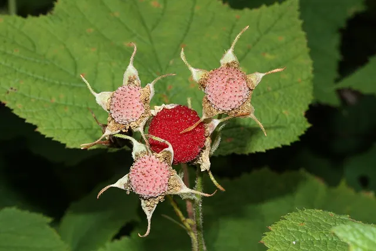

Wild fruit · Jul–Aug
Thimbleberry
Rubus parviflorus
Also called Thimbleberry, Ronce parviflore
Thimbleberry is a wild fruit you can forage from July to August in British Columbia and Ontario. Thornless shrub with huge soft maple-like leaves and soft red cap-shaped berries.

When is thimbleberry in season in Canada?
Thimbleberry is usually in season July to August. Timing shifts with weather, latitude and altitude.
Where does thimbleberry grow in Canada?
Thimbleberry grows in British Columbia, Ontario. Regions: British Columbia, Ontario.
How do you recognise thimbleberry?
Thornless shrub with huge soft maple-like leaves and soft red cap-shaped berries.
How do you harvest thimbleberry?
Pick only fully ripe fruit that comes away easily, into a shallow container so it doesn't crush. Leave plenty on the plant for birds and wildlife.
How do you eat thimbleberry?
Fresh or jam.
How do you store thimbleberry?
Jam; too soft to freeze well.
What is thimbleberry good for?
Vitamin C.